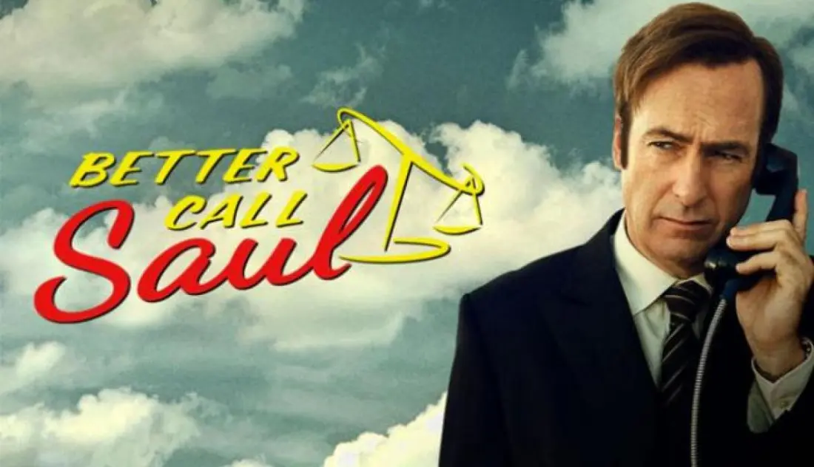

DIRECTOR E IDEAS PRINCIPALES
Aunque Vince Gilligan es el creador de la serie, la serie cuenta
con múltiples directores que mantienen
una coherencia visual increíble. Se destaca el uso de planos simbólicos, colores con significado
y escenas que dicen más con silencios que con diálogos.

En cuanto a ideas similares, Breaking Bad comparte ADN con otras obras que exploran
la moral
gris y la transformación de sus personajes:
- Better Call Saul:
Precuela centrada en la transformación de un abogado carismático en alguien mucho más oscuro. - The Sopranos:
Una mirada profunda a la mente de un criminal y su vida personal. - Ozark:
Otra historia donde una familia común se ve arrastrada al mundo del crimen.
Todas estas series tienen algo en común: no te dan respuestas
fáciles. Te meten en un terreno
donde lo correcto y lo incorrecto
se mezclan… y te obligan a decidir vos de qué lado estás.